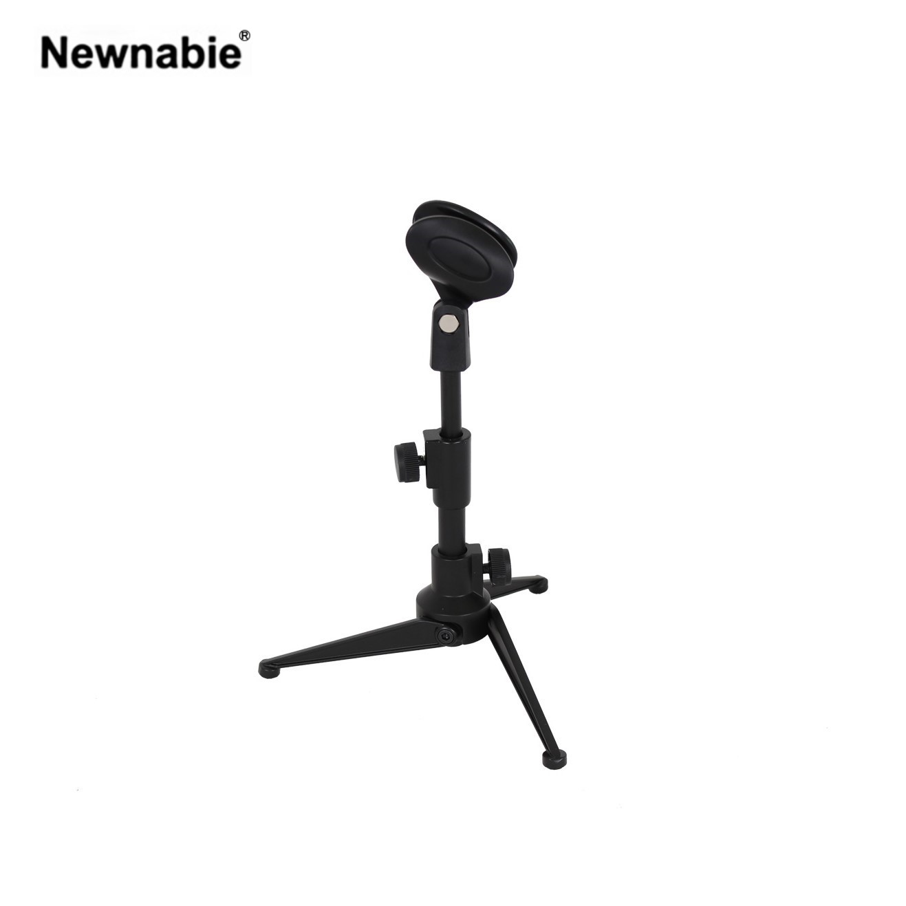

Newnabie NB-12는 160–270 mm 미니 높이의 데스크톱 마이크 스탠드로, 마이크 홀더가 기본 포함되어 있습니다. 0.32 kg의 초경량 구조로 작은 홈 스튜디오·개인 방송·온라인 회의 환경에서 가방에 쉽게 휴대하며 사용할 수 있는 포터블 제품입니다.

휴대성에 특화된 미니 데스크톱 마이크 스탠드. 마이크 홀더가 기본 구성되어 있어 박스를 열자마자 사용할 수 있는 포터블 제품입니다.
NB-12는 160 mm에서 270 mm의 미니 높이 범위를 가진 데스크톱 마이크 스탠드로, 개인 팟캐스트 · 온라인 회의 · 소규모 방송 녹음 등의 홈 환경을 위해 설계되었습니다. 0.32 kg의 초경량 본체는 가방에 쉽게 들어가 휴대가 간편합니다.
기본 구성에 마이크 홀더가 포함되어 있어, 본체와 홀더를 별도로 구매할 필요 없이 박스를 열자마자 원하는 다이나믹 마이크를 장착해 사용할 수 있습니다. 22,000 원의 경제적인 단가로 테이블 위 간단한 수음 구성을 완성할 수 있습니다.
| 모델명 | NB-12 |
|---|---|
| 타입 | Mini Desktop Mic Stand (Holder Included) |
| Height | 160 – 270 mm |
| 기본 구성 | 본체 + 마이크 홀더 |
| Net Weight | 0.32 kg |
| 권장소비자가 | 22,000 원 / 개 (VAT 포함) |
※ 본 사양 · 단가는 수입원(현대에이브이씨) 2026-01-01 스탠드 가격표 기준입니다.